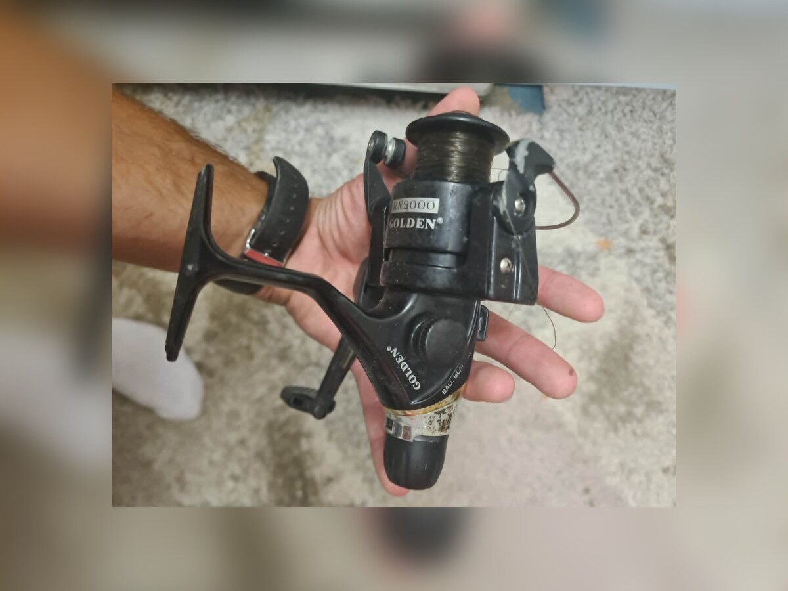

Parametry kołowrotka i ich praktyczne znaczenie
Rozmiar (1000–10000+)
Rozmiar opisuje wielkość korpusu i pojemność szpuli, choć skala nie jest w pełni znormalizowana między markami (Daiwa 2500 ≈ Shimano 2500, ale Okuma czy Penn liczą nieco inaczej). Orientacyjnie: 500–1000 to ultralight i łowienie pstrąga; 2000–2500 — uniwersalny spinning na okonia i sandacza; 3000–4000 — szczupak, lekki feeder; 4000–6000 — ciężki feeder, lekki karp; 6000–10000 — karpiowe dalekodystansowe „big pity", sum, morze. Większy rozmiar to większa siła uciągu i pojemność, ale też masa — kołowrotek 4000 potrafi ważyć o 100 g więcej niż 2500, co czuć przy całodziennym spinningu.
Przełożenie i zbieranie liny
Przełożenie (np. 5.2:1) mówi, ile obrotów rotor wykonuje na jeden obrót korby. Ważniejszą praktycznie wartością jest zbieranie liny na obrót (cm): wolne (do ok. 70 cm) daje większą siłę przy wleczeniu ciężkich przynęt i holu dużych ryb, szybkie (85–100+ cm) pozwala błyskawicznie wybrać luz przy jiggowaniu z góry i szybko ściągnąć zestaw na przerzut. Do feedera i metody karpiowej popularne są przełożenia umiarkowane z dużą szpulą; do spinningu gumą — szybsze.
Hamulec
Hamulec przedni (regulacja na szpuli) jest precyzyjniejszy i mocniejszy — standard w spinningu i karpiu. Hamulec tylny łatwiej regulować w trakcie holu, ale ma zwykle mniejszy zakres — spotykany w kołowrotkach spławikowych i matchowych. Liczy się nie tylko maksymalny uciąg (podawany w kg), lecz przede wszystkim płynność startu: dobry hamulec oddaje linę bez szarpnięcia, co przy cienkich plecionkach decyduje o wyniku holu. Praktyczna reguła ustawienia: hamulec powinien puszczać przy ok. 1/4–1/3 wytrzymałości linki.
Łożyska
Liczba łożysk (np. 5+1, gdzie +1 to sprzęgło jednokierunkowe blokujące korbę) jest chwytem marketingowym tylko częściowo: 4–6 dobrze uszczelnionych łożysk klasy japońskiej pracuje lepiej niż 12 tanich. Zwracaj uwagę na łożyskowanie rolki kabłąka (kluczowe dla plecionki) i na uszczelnienia (np. Magsealed u Daiwy, X-Protect u Shimano) — to one decydują o żywotności, szczególnie przy łowieniu w deszczu i zimą.
Szpula i nawój
Pojemność podaje się jako średnica/długość żyłki (np. 0,25 mm/150 m). Szpule płytkie (shallow) są stworzone pod plecionkę — nie trzeba stosować grubego podkładu. Krawędź szpuli z twardą powłoką zmniejsza tarcie i wydłuża rzut. Równość nawoju (oscylacja) wpływa na dystans i na to, czy plecionka nie będzie wrzucać pętli. Zapasowa szpula w zestawie to realna wartość: jedna pod plecionkę, druga pod żyłkę.

Typy kołowrotków
Stacjonarny (spinningowy)
Najpopularniejsza konstrukcja o nieruchomej szpuli — uniwersalna, łatwa w obsłudze, wybaczająca błędy rzutu. Pokrywa zdecydowaną większość polskiego wędkarstwa: spinning, spławik, grunt, feeder, karp. Dla początkującego to jedyny sensowny pierwszy wybór.
Multiplikator i kołowrotek castingowy
Szpula obraca się podczas rzutu, co wymaga kontroli kciukiem i hamulców odśrodkowych lub magnetycznych, ale daje większą precyzję, bezpośrednie czucie i siłę uciągu. Niskoprofilowe „baitcastery" królują w łowieniu jerkami, dużymi gumami i w technikach bassowych; klasyczne multiplikatory-beczki — w trollingu, na morzu i przy sumie. Próg wejścia jest wyższy (nauka rzutu, ryzyko „peruki"), a ceny zaczynają się wyżej niż w stacjonarnych.
Kołowrotki z wolnym biegiem (baitrunner / free spin)
Dodatkowy mechanizm pozwala rybie swobodnie ściągać linę przy zamkniętym kabłąku; obrót korbą lub dźwignia wraca do hamulca głównego. Standard w łowieniu karpia i suma metodą gruntową — wędka leży na podpórkach, a wolny bieg chroni ją przed ściągnięciem do wody przy mocnym braniu.
Producenci i marki kołowrotków
Shimano
Japoński gigant z Osaki, założony w 1921 r.; precyzja rodem z produkcji rowerowych grup osprzętu. Słynie z kutych na zimno kół zębatych (HAGANE), płynności pracy i kultowych serii: budżetowe Sienna i Sedona, środkowe Nasci i Vanford, wyżej Stradic i Twin Power, a flagowa Stella od lat uchodzi za wzorzec stacjonarnego high-endu. Pozycjonowanie: pełna drabinka cenowa, bardzo dobry serwis i dostępność części.
Daiwa
Japonia, od 1958 r. (grupa Globeride). Pionier wielu rozwiązań: uszczelnienie cieczą magnetyczną Magsealed, lekkie kompozytowe korpusy Zaion, koncepcja LT (Light & Tough). Drabinka od Ninja i Crossfire LT, przez Fuego i Caldię, po Certate i flagową Exist — bezpośredniego rywala Stelli. Pozycjonowanie analogiczne do Shimano; wybór między nimi to często kwestia preferencji „charakteru" pracy mechanizmu.
Okuma
Tajwan, założona w 1986 r., produkuje we własnych fabrykach i systematycznie buduje renomę. Słynie z bardzo dobrego stosunku jakości do ceny (serie Ceymar, Epixor, ITX) oraz mocnych kołowrotków morskich i karpiowych. Pozycjonowanie: budżet i średnia półka — częsta rekomendacja „najwięcej kołowrotka za rozsądne pieniądze".
Abu Garcia
Szwecja (Svängsta, korzenie od 1921 r.), dziś w amerykańskiej grupie Pure Fishing. Legenda multiplikatorów — seria Ambassadeur produkowana od lat 50. to klasyk trollingu i suma, a niskoprofilowe Revo należą do najpopularniejszych baitcasterów świata. Stacjonarne (Cardinal, Zenon) również solidne. Pozycjonowanie: średnia i wyższa półka, w multiplikatorach status kultowy.
Penn
USA (Filadelfia, od 1932 r.), również w grupie Pure Fishing. Synonim wędkarstwa morskiego: Slammer, Spinfisher i klasyczne multiplikatory Senator słyną z pancernych, pełnometalowych korpusów i uszczelnień klasy IPX. W Polsce wybierany na dorsza, troć brzegową i sumowanie. Pozycjonowanie: średnia półka wzwyż, projektowany na ciężkie warunki słonowodne.
Ryobi
Japońska marka, której kołowrotki wędkarskie powstają dziś na licencji (m.in. w grupie Rapala VMC). Kultowy w Polsce model Zauber zapracował na opinię „japońskiej płynności w rozsądnej cenie". Pozycjonowanie: średnia półka, częsty wybór świadomych wędkarzy z ograniczonym budżetem.
Mikado, Jaxon, Robinson
Trzy polskie firmy z lat 90. (Ostrołęka i okolice Warszawy/Poznania), zlecające produkcję sprawdzonym azjatyckim wytwórcom. Słyną z przystępnych cen, szerokiej oferty rozmiarów do spławika, gruntu i spinningu rekreacyjnego oraz łatwego serwisu krajowego. Pozycjonowanie: budżet — rozsądny start i sprzęt zapasowy; topowe serie wkraczają w średnią półkę.
Segment karpiowy: Shimano, Daiwa, Fox
W kołowrotkach typu big pit liczą się Shimano (Ultegra XSD, Aero Technium — legenda rzutów dystansowych), Daiwa (Emblem oraz kultowa wśród karpiarzy Basia/Basiair) i brytyjski Fox (EOS, FX). Fox pozycjonuje się od średniej półki po premium; japońskie flagowce dalekodystansowe to już wydatek klasy najwyższej.
Jak dobrać kołowrotek
Dopasowanie do wędki i metody
Zacznij od balansu z kijem: zestaw trzymany tuż przed kołowrotkiem powinien być w równowadze. Do spinningu UL/L — rozmiar 1000–2500; uniwersalny spinning — 2500–3000 z przednim hamulcem i zbieraniem 75+ cm; feeder — 4000–6000 z płytką szpulą i równym nawojem; spławik — lekki 1000–2500; karp — 6000+ z wolnym biegiem lub big pit; sum i morze — pancerne 6000–10000 o uciągu 12 kg i więcej. W sklepie sprawdź luz na korbie i rotorze (nie powinno go być), płynność przy wolnym obrocie i pracę kabłąka — musi domykać się pewnie, bez przeskoków.
Najczęstsze błędy
Czego unikać
Kupowanie po liczbie łożysk zamiast po jakości uszczelnień. Rozmiar „na wyrost" — ciężki kołowrotek rujnuje balans lekkiego kija. Zakręcanie hamulca „na amen" i hol na sztywno — prosta droga do zerwania ryby lub uszkodzenia mechanizmu. Kręcenie korbą, gdy ryba ściąga linę (zamiast pompowania kijem) — skręca linkę i zużywa przekładnię. Przepełnianie szpuli (pętle) albo zbyt mały nawój (krótsze rzuty) — prawidłowo lina kończy się 1–2 mm pod krawędzią. Mycie kołowrotka strumieniem pod ciśnieniem — wtłacza sól i piach do środka.
Konserwacja
Po wyprawie i serwis sezonowy
Po każdym łowieniu (zwłaszcza w deszczu, zimą i nad morzem) przetrzyj korpus wilgotną szmatką — po morzu zwilżoną słodką wodą — i wysusz przy poluzowanym hamulcu; tarcze ściśnięte miesiącami tracą płynność. Co kilka wypraw kropla oleju na rolkę i przeguby kabłąka. Raz do roku: smar do przekładni głównej, olej do łożysk — albo serwis u specjalisty, jeśli nie chcesz rozbierać mechanizmu samodzielnie. Tarcz karbonowych hamulca nie smaruj zwykłym smarem — wyłącznie dedykowanym, jeśli producent to przewiduje. Transportuj w neoprenowym pokrowcu.
FAQ — najczęstsze pytania
Ile wydać na pierwszy kołowrotek?
Rozsądne minimum to ok. 150–300 zł za stacjonarny uznanej marki (Shimano Sedona, Daiwa Ninja, Okuma Ceymar i odpowiedniki). Tańsze konstrukcje potrafią działać, ale szybko pojawia się luz i nierówny nawój.
Hamulec przedni czy tylny?
Przedni — mocniejszy, precyzyjniejszy, mniej elementów w korpusie. Tylny ma sens głównie w lekkim spławiku, gdzie wygoda szybkiej korekty w holu przeważa nad maksymalnym uciągiem.
Czy multiplikator jest „lepszy" od stacjonarnego?
Nie lepszy — inny. Wygrywa siłą, precyzją i pracą z grubymi linkami przy ciężkich przynętach; przegrywa progiem nauki i zachowaniem przy bardzo lekkich przynętach pod wiatr. Zaczynaj od stacjonarnego.
Co ile wymieniać linkę na szpuli?
Żyłkę co sezon (UV i pamięć skrętu robią swoje), plecionkę co 1–3 sezony zależnie od intensywności — można też przewinąć ją odwrotnie, by pracował świeży odcinek.
Źródła i weryfikacja
Treści są opisem praktycznych parametrów sprzętu, bez deklarowania konkretnych wyników połowu. Dane o rozmiarach, przełożeniach, uciągach i technologiach (HAGANE, Magsealed, LT, IPX) pochodzą z kart katalogowych i materiałów producentów: Shimano, Daiwa, Okuma, Abu Garcia, Penn, Fox, Mikado. Parametry konkretnego modelu zawsze weryfikuj u producenta lub dystrybutora; zalecenia serwisowe — w instrukcji dołączonej do kołowrotka.
Jak czytać parametry sprzętu
Zakresy są orientacyjne. Podane budżety, wymiary, ciężary, pojemności i klasy to punkt wyjścia redakcji, zależny od metody, wody, przynęty oraz danych producenta; nie są zweryfikowaną specyfikacją konkretnego modelu. Parametr wybranego produktu potwierdzaj w aktualnej karcie producenta. Dostęp i ocena: 17 lipca 2026.
Sprzęt do poradnika
Porównaj pasujące kategorie sprzętu
Poniższe kategorie odpowiadają sprzętowi omawianemu w tym poradniku. To linki afiliacyjne — FishPoint może otrzymać prowizję, ale cena dla Ciebie się nie zmienia.